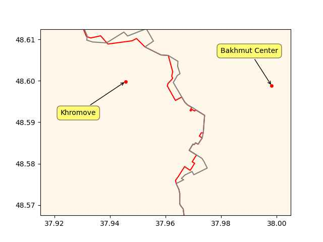

Week 19
Newsweek: "[4/19] Eric Adams Calls Out Joe Biden For 'Turning Back' on NYC's Migrant Crisis"
The Jerusalem Post: "Israel launches first hydrogen fuel station: Start of energy market revolution"
The Financial Express: "MG India to launch 5 new cars by 2028, to invest in hydrogen-cell tech"
Road networks for entire countries on plain text files. So many
possibilities. Do a little Djikstra..? U can represent graphs in
dictionaries. diskdict is your friend.
Dude's hipster code crapped out on simplest files. Alternative Rust code chewed it up (OSM map files) like it was nothing. Massive amts processed in mere seconds.. This is not just about skill, it's cultural.. I bet the Rust guy thinks a certain way always with an eye on performance.
TASS: Hungary, Serbia to build oil pipeline to supply Russian oil — Hungarian Foreign Minister.. Russian oil supplies via the Druzhba pipeline are not subject to restrictions imposed by the EU"
TASS: "Gazprom's gas supplies to Europe via Ukraine rise by 23%"
CNBC: "Nikola exits European joint venture to focus on hydrogen trucks in North America'
Pseudorandom # gen for song shuffler take binascii.hexlify on
os.urandom, create digest out of ps gaux output, append to that
seconds since epoch, time.time(), run mod N to select item out of N
items.
Dems are back to bitching about "fact checking" per DJT CNN town hall. Who fact checked Russiagate?
Al Jazeera: "First baby born using DNA from three people: UK.. Most DNA comes from the child's two parents but about 0.1 percent comes from a third person - another woman"
RWE.com: "RWE, one of the 4 big German utilities, plans to install up to 70 heavy-duty #hydrogen stations until 2030 in partnership with Westfalen Gruppe"
Past 10 days
u.sm_plot_ukr1('ukrdata/fl-0511.csv','ukrdata/fl-0501.csv',['Khromove','Bakhmut Center'],48.59,37.96,zoom=0.005)

Am currently near the place where the party will be if Tayyeap falls.
It's not an easy name to be sure. Some are even worse. I heard of a Çeşmecibaşı, four funky letters, that dude gets totally butchered, he cld have an identity crisis.
MSM keeps butchering TR opposition leader Kilicdaroglu's name; I heard Kilicacoglu, Kilicdadoglu, Kilicaoglu, Kilacaogoglu.. Daam
Tigger election nearing..
POF: "The Port of Rotterdam, together with the Province of Zuid Holland and more than 40 partners have launched an ambitious project for emission-free inland and near-shore shipping on #hydrogen".
Al-Monitor: "Syria's Assad receives Saudi invitation to Arab summit"
Al-Monitor: "Saudi Arabia, Syria agree to restore diplomatic ties"
.. these humans would form the native Americans no doubt - who would later be wiped out by Westerners. The white man has been killing Chinese people for centuries then
The Guardian: "Some of the first humans in the Americas came from China, study finds"
Al-Monitor: "Iran increases trade with BRICS including China, as it eyes to join bloc"
Chemistry World: "An artificial photosynthesis system that combines semiconducting nanoparticles with a non-photosynthetic bacterium could offer a promising new route for producing sustainable solar-driven hydrogen fuel"
Inflation flatline
2023-03-01 4.984974
2023-04-01 4.930320
H2 View: "'Europe is ready to move the hydrogen industry from niche to scale,' said Frans Timmermans, Executive Vice-President of the European Commission at the World Hydrogen Summit in Rotterdam"
Motorsport: "Ligier, Bosch join forces on hydrogen car to be revealed at Le Mans"
Swissinfo.ch: "ABB to build one of Europe’s largest renewable hydrogen projects.. produc[ing] around 240 tonnes of hydrogen per day, equivalent of around 1.8 million barrels of oil per annum"
Reuters: "Ford to test small UK fleet of hydrogen fuel cell E-Transit vans.. Interest in using hydrogen fuel cells to power trucks and vans is getting a boost from fleet operators looking for a more practical alternative to electric vehicles and rising government aid, particularly the U.S. Inflation Reduction Act (IRA)"
Broid can do X11. There are free X-server progs, ssh -X and boom,
your fav Nix editor runs on tablet through X. A sight to see.
Switched to NVidia Jetson from Raspberry Pi for portable dev platform. RPi choked.. Micro usb->usb cabling, the amperage works so a tablet can power the NJ board. Latest btooth keyboard, tablet, SSH into Jet, and go karaze typing.
If "certain Reps" wanted to end empire, the debt ceiling issue could do it. Imagine the country who is at the center of the petrodollar system refuses to stand behind their debt, which they could easily serve by printing the money.
H2 View: "US DOE selects two nuclear-based hydrogen production projects for funding"
"The lowest poll of the Biden presidency"... there hasn't been much change there actually. Net approval of about -10%.. it fluctuated around that value for months.
2023-05-07 -10.604047
2023-05-08 -9.947167
2023-05-09 -10.158535
New Scientist: "It takes just four particles of light to jump-start photosynthesis in a plant's cells, but the details of what exactly happens after the fourth photon is absorbed have eluded researchers - until now.. Two teams of researchers have revealed microscopic details of how oxygen is formed during photosynthesis, the process by which plants, algae and some bacteria harness sunlight to create the energy they need to grow. Understanding photosynthesis at this level could advance the development of clean fuels"
You ain't never gonna cheat death Focker. You are out of the circle of trust 👌
😂
WION: "PayPal founder Peter Thiel hopes to cheat death, come back to life again"
WION: "Melania Trump says she supports Donald Trump's 2024 presidential bid"
"Toyota and Hyundai broaden fuel-cell semi plans for US.. The same day as Toyota's announcement, Hyundai debuted the version of its Xcient Fuel Cell for the U.S. Hyundai in 2021 announced plans to bring this Class 8 truck to California for testing. The Xcient Fuel Cell launched in 2020 and has already operated in Switzerland, Germany, Israel, South Korea, and New Zealand, covering more than 4 million miles so far, according to a Hyundai press release"
South Coast Register: "South Australia woos backers for green hydrogen, steel.. South Australian Premier Peter Malinauskas will spruik the state's world-leading green hydrogen project during a four-day trade mission in Europe.. The premier will meet potential investors in Berlin and Rotterdam before giving a keynote speech at the World Hydrogen Summit in the Netherlands"
Hindustan Times: "US’ 'erroneous words and deeds' to blame for state of ties: Chinese FM"
Not surprising, the tech is shit
CNBC: "A recent surge of interest in NFTs on Bitcoin has led to congestion on the network"
The Guardian: "More than 40 leading scientists have resigned en masse from the editorial board of a top science journal in protest at what they describe as the 'greed' of publishing giant Elsevier"
Forget diversity, the world, the West could not even entice AFG to end flogging. A bad case of mixed-up priorities.. If AFG recevied proper help they would be producing cotton now instead of opium. That would gain you some chits, then maybe there'd be change on other stuff.
AP: "UN urges Afghanistan’s Taliban to end floggings, executions"
The Guardian: "Pro-Putin businessman emerges as pick to chair Italy's biggest energy firm.. Paolo Scaroni is the preferred candidate of the ruling coalition government of Giorgia Meloni to chair Enel"
CNBC: "South Korea's finance minister says country is at a 'turning point' in relations with Japan"
H2 Bulletin: "South Korea plans to convert more than 250 commuter buses intro hydrogen-fuelled buses by this year and more than 2,000 by 2026, in a concerted effort to raise the uptake of hydrogen vehicles"
H2 Insight: "Bloom Energy 4MW solid oxide electrolyser begins hydrogen production at NASA research centre"
Euractiv: "UK Labour Party wins big among Brexit supporters in local elections"
The Spectator: "Local elections 2023: Tories lose 1000 councillors.. Starmer says his party is on track to win the next general election after the Tories were hammered in local polls"
The meatgrinder of Brexit destroyed one politician after another, finally ending up with Sunak at that coronation. Tories will be trounced in the next general due to previous chaos unrelated with Sunak, but at least there will be some competency in the office, the country will not burn in this last stretch of conservative government. Hey it could have been Lettuce Liz at that coronation - label pinned by the colorful Brit media, meaning a lettuce would outlast the former PM -they were proven right-.
"UK multiculturalism" where your PM of Indian ethnic origin (who is culturally English) reads a passage from the bible at the English king's coronation.
The last Arab Spring country, in fact the place where it started, is rolling back democratic reforms.
Informed Comment: "Tunisia Doubles Down on Democratic Rollback"
A high-price as in concession that would lead to a return of pre-war conditions? Is that a big deal? He should have those concessions considering many other countries contributed to the mess that is now.
Al-Monitor: "Assad will demand high price for return of refugees"
"The turning point in the American-Iranian relationship was not, as the official version would have it, the election of Hassan Rouhani in June 2013. It was the reelection of Barack Obama in November 2012. Indeed, the first secret meeting with the Iranians.. took place even earlier, in early July 2012, eleven months before Rouhani came to power. Jake Sullivan.. traveled secretly to Oman to meet with Iranian officials... Most pertinent is the timing. At that moment, pressure was mounting on the president to intervene in Syria. Sullivan probably briefed the Iranians on Obama’s strong desire to stay out of that conflict"
I see Jake Sullivan is speechifying some stuff
Good good.. this is the aimed result of the 2008-16 White House policy let's not forget.
Al-Monitor: "Arab League readmits Syria, paving the way for Assad to attend Saudi summit"
Politico.eu: "EU to host Armenia-Azerbaijan peace talks"
Al-Monitor: "EU cancels Israel's Europe Day reception over Ben-Gvir participation"
Euractiv: "Scholz backs African Union bid for G20 seat on second trip to continent"
RU frontline changes in the past two months, multiple regions
u.sm_plot_ukr2('ukrdata/fl-0501.csv','ukrdata/fl-0304.csv')
![[-]](ukr-13.jpg){kind=link}
"Downstream benefits of business activity".. how do you measure that? In terms of fish in the Hudson River? Such activity clearly did not work for them, or for people who lived off the river. This the most advanced country in the world, mind you. I wouldn't have believed it if I hadn't lived near the f-ing thing myself.
There is nothing sacred about work, that is a ruse created for the business class so they can remain "in charge" (to get credit which they use to pay salaries). Work should not equal pay. As long as new money is created exclusively for business as credit, working class and humanity at large will never know peace. Have no doubt - these people will kill you. With money they can buy influence, pollute your rivers, your children's brains, even the very air your breathe. They've already done this. Noone should require any more proof than what has already taken place. New money creation needs to be split at the very least, evenly between credit and direct assistance. If that means a reduction in "business activity", that might be a good thing. Less Coca-Cola, more fruits and vegetables perhaps. Less private property more public parks. Who knows?
"@jaztrophysicist@astrodon.social
Sad and absurd but true: holiday periods encapsulate 90% of academic research time"
Russia is a huge country, there are many regions who are regionally distinct, they can maintain culture. Russia calling itself multicultural is different than US using the same term whose people are intertwined, are always on the move.
Culture is about numbers and proximity due to its subconcious transmission. By numbers I'm talking big numbers, US state-level big, or a country level big. Millions of Lithuanians in US living close proximity in one state could maintain culture. Interspersed among the larger populace they cannot. They could create ritual around their culture to maintain it mumble stupid shit to themselves in Lithuanian prayers put funky Lithuanian hats on their heads, it won't work.
.. but hopes were dashed, rate increased, balance sheet started reducing, market rally went limp.
Good catch by M. Silva, looks at the correlation btw FED balance sheet and decreasing stock market (replicated below). There was a brief uptick in the balance due to the banking crisis (dashed line) markets rallied, ppl thought it was to time to parteh
"@campuscodi@mastodon.social
Mozilla's Mastodon instance is now live"